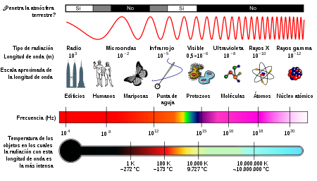

|
ESPECTRO ELECTROMAGNÉTICO Y RADIOELÉCTRICO |
|
 |
|
Existen
diferentes tipos de ondas electromagnéticas, que se distinguen por su
frecuencia. El conjunto de todas ellas es el espectro electromagnético:
En la imagen se puede apreciar que las ondas de radio son las de menor
frecuencia de todo el espectro. Los rayos X y gamma son las ondas de
mayor frecuencia, y por lo tanto las más energéticas. En medio tenemos
la luz visible que nuestros ojos y nuestro cerebro son capaces de
recibir y transformar en imágenes; dentro de la luz visible, a cada
color le corresponde una frecuencia.
|